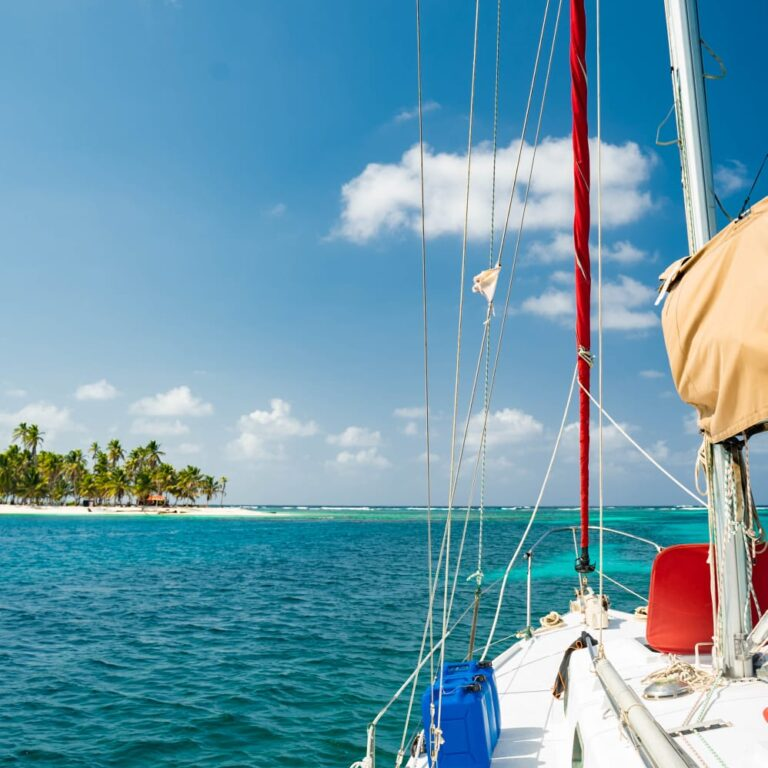
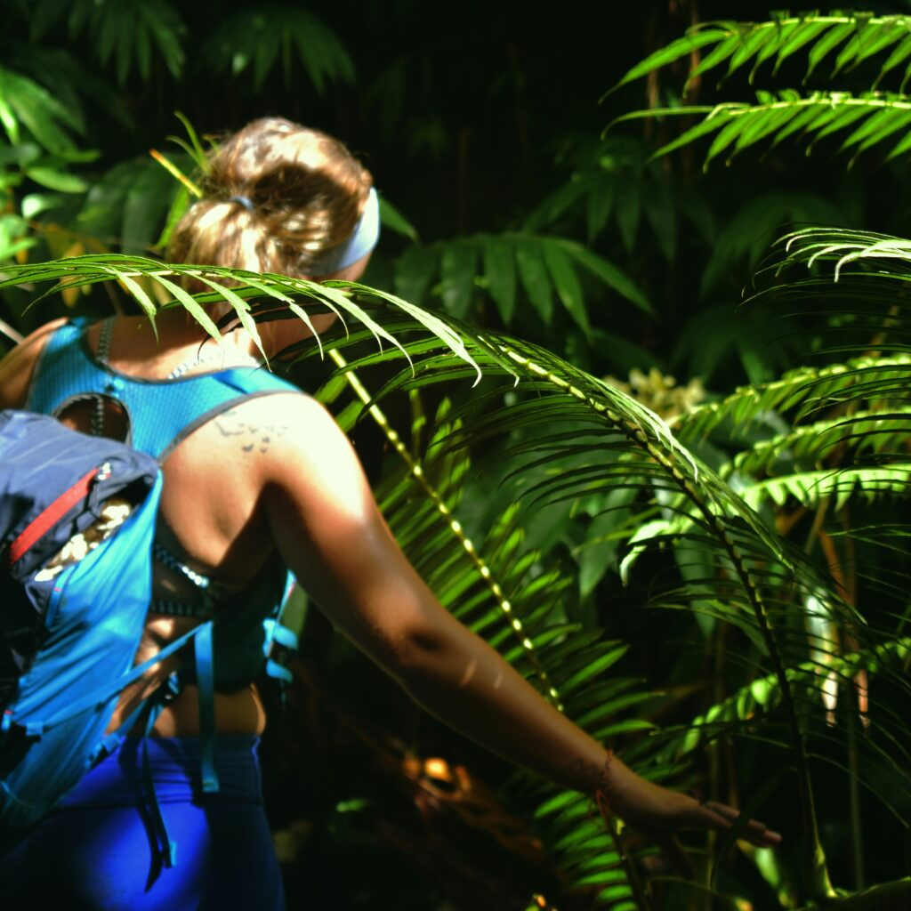
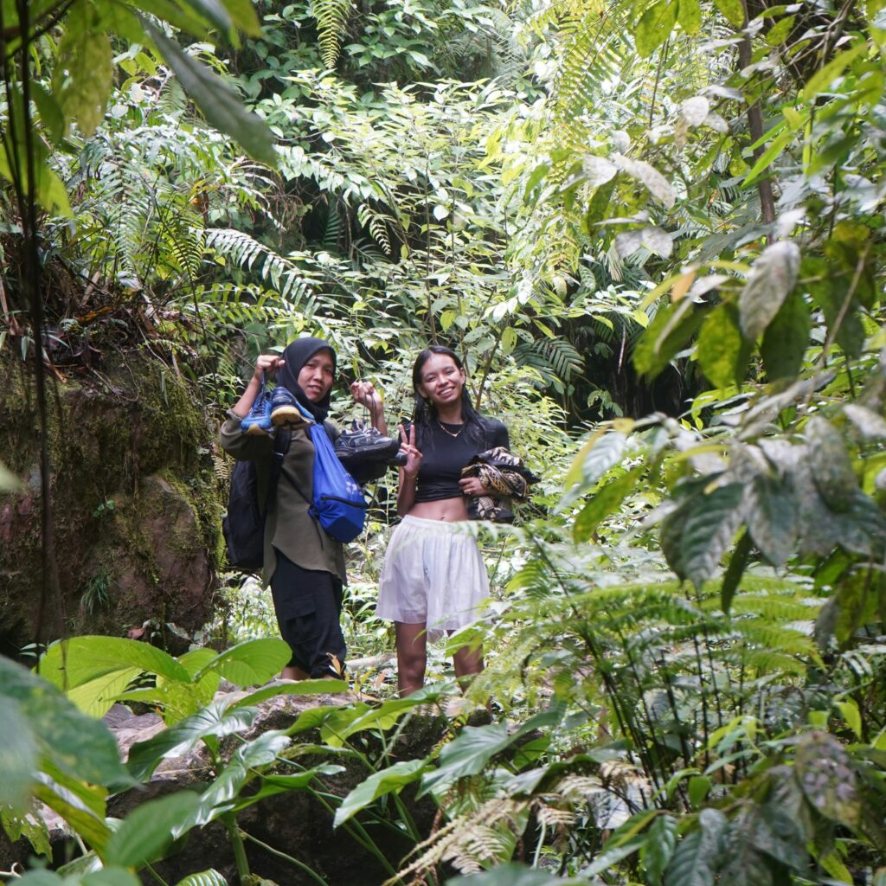
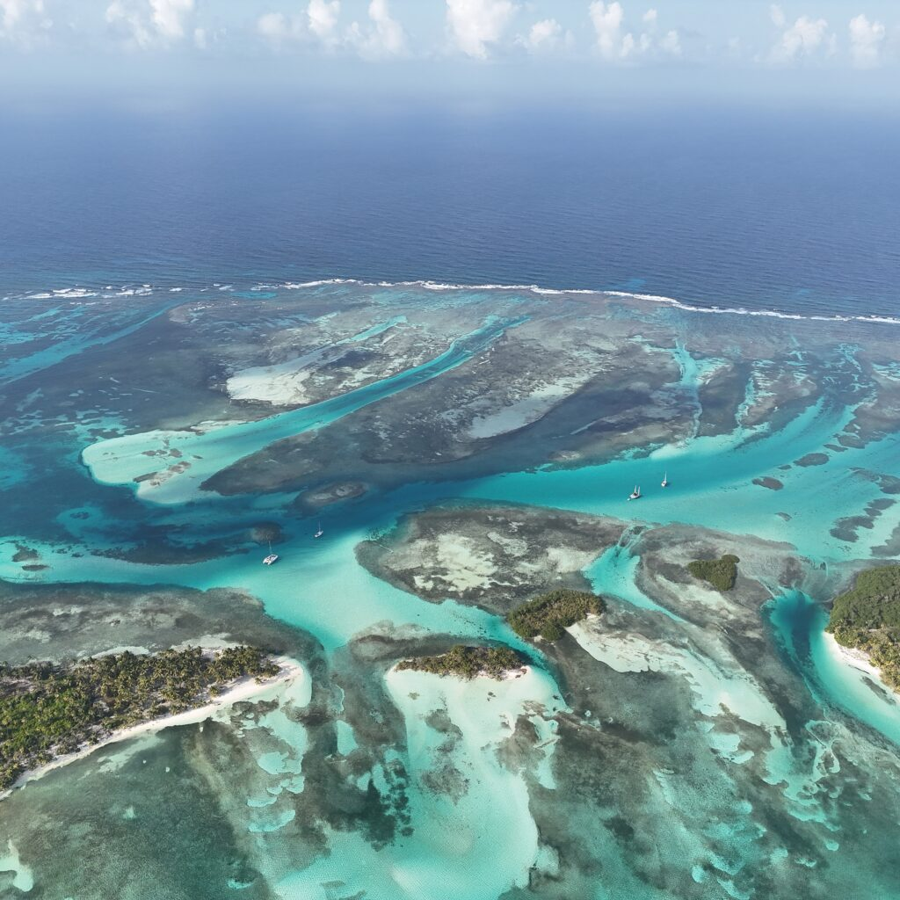

Why Explore San Blas by Sailboat?
While it's possible to visit San Blas in other ways, nothing compares to the freedom and beauty of exploring these islands by sailboat. For example, a sailboat allows you to access remote islands that are inaccessible by other means. Moreover, you'll enjoy a comfortable and exclusive adventure far from crowded tourist areas.
Reach Remote Islands: Sailboats give you access to untouched islands.
Comfort Meets Adventure: Wake up to the sound of waves and explore new paradises daily.
Escape the Crowds: San Blas remains free of mass tourism, offering a truly serene experience.

What Makes San Blas Special?
1. Island-Hopping Adventures
San Blas is home to over 300 islands, each unique in its charm. For instance, some islands have just a few palm trees, while others are large enough to explore on foot. A sailboat allows you to wake up to a new adventure every day.
2. Snorkeling and Marine Life
Dive into crystal-clear waters and discover vibrant coral reefs teeming with marine life. Additionally, you might spot colorful fish, rays, and even nurse sharks while snorkeling.
3. Disconnect and Reconnect
There are no hotels, cars, or streetlights—just pure natural beauty. As a result, a sailing trip offers a rare chance to disconnect from technology and reconnect with yourself.
4. A Glimpse Into Kuna Yala Culture
The Kuna people have lived on these islands for centuries. Furthermore, visiting their villages offers an opportunity to learn about their traditional way of life and unique crafts, such as molas.

What Does a Typical Day Look Like on a San Blas Sailboat?
Here's how your day might unfold:
Morning: Start the day with a fresh breakfast while anchored at a quiet island.
Afternoon: Sail to a new paradise, explore hidden beaches, or snorkel vibrant coral reefs.
Evening: Enjoy a homemade dinner under a starlit sky, ending the day in peace.

Tips for First-Time Visitors
Pack Light: Space on sailboats is limited, so bring only the essentials.
Stay Eco-Friendly: Use reef-safe sunscreen and reusable water bottles to help protect San Blas's pristine environment.
Be Flexible: The magic of San Blas is in its simplicity—embrace the slower pace and enjoy the journey.
How to Plan Your Trip
Exploring San Blas by sailboat doesn't have to be complicated. Start by booking your trip with San Blas on Sailboats, where you'll enjoy:
Private or shared boat experiences tailored to your needs.
A friendly, experienced crew that takes care of everything.
Sustainable and eco-conscious practices to preserve the beauty of the islands.

Conclusion
San Blas isn't just a destination—it's an experience you'll cherish forever. Whether you're seeking adventure, culture, or peace, exploring San Blas by sailboat is the ultimate way to immerse yourself in this Caribbean paradise.
Ready to set sail? Let's plan your adventure today!